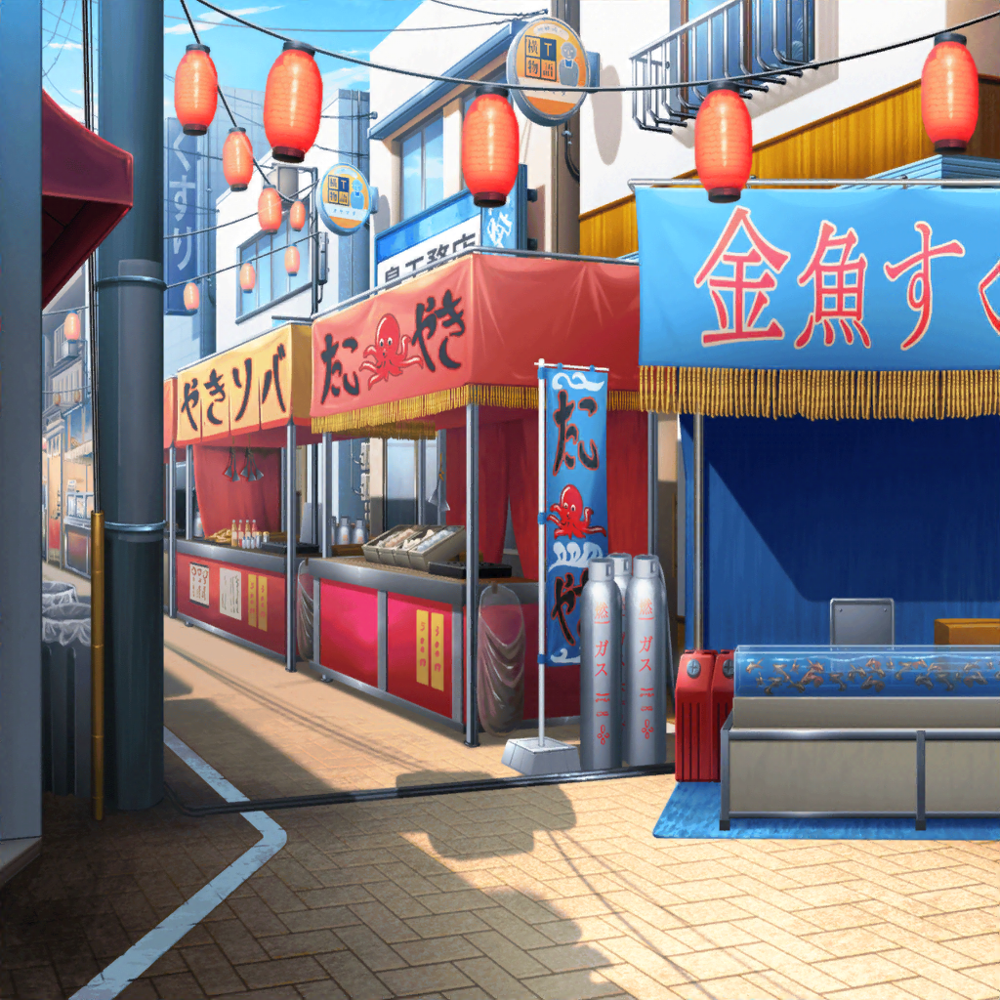
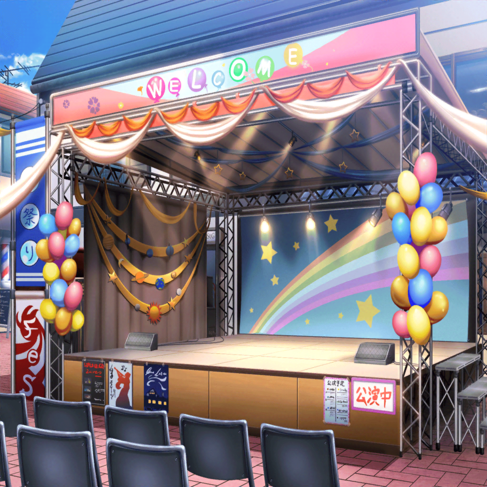

香澄
はあーー……
ここまで来たのにライブできないなんて
有咲
苦情ねえ。本当に来たのかね、そんなもの
沙綾
お祭りが中止にならなかったのは不幸中の幸いだけど……
たえ
……くやしい
りみ
香澄ちゃん……どうしよう？
香澄
ううーん……
……よし、決めたっ！
沙綾
決めたって、なにを？
香澄
お願いしに行く。苦情を送った人に会って、謝って……
でもライブだけはさせてもらえるよう、お願いしてみる！
有咲
会うって、どうやってだよ。どこの誰かもわからないのに。
それに、仮に会えたとして、
こっちのお願いなんてきいてくれるか？
沙綾
そうだね。有咲の言うとおりだと思う。
でも……黙ってここに座ってるよりはましじゃない？
りみ
そ、そうだよっ。
あきらめないで頑張ったから、お祭りだってできたんだもん。
今度だって……！
たえ
やってみる価値はあるかも
香澄
……さーや。りみりん、おたえ！ ありがとう！
有咲は――……
有咲
いや、べ、別にやらないとは言ってねーし！
それにこのまま、区役所のやつの言いなりってのもイヤだしな！
やってやろうじゃん！
香澄
よかった～！ ありがと、有咲！
……あれっ？ ミッシェル？
有咲
へ？
ミッシェル
……
りみ
手招き……？
たえ
ミッシェルが呼んでる
ミッシェル
……
沙綾
ついてこい、って言ってるみたいだね
香澄
なんだろう……。ちょっと、行ってみようか？

商店街 特設ステージ横
商店街のおじさん
おお！ よかった、まだ帰ってなかったんだね
沙綾
はい、ミッシェルに呼ばれて……でも、どうしたんです？
商店街のおじさん
どうもこうもないよ。ほら、聞いてごらん。
ステージに集まった人たちの声が、ここまで聞こえてくるから
りみ
ステージに……？
子供の声
ねえねえ、楽器、やらないのー？
男性の声
中止なのかな。
楽しみにしてたのに、残念だなあ……
少女の声
花咲川の文化祭に出てたコたちなんでしょ？
んも～ッ、聞きたかったのにィ～
たえ
あんなに大勢、楽しみにしてくれてたんだ
商店街のおじさん
君たちのステージが今回の目玉だからね。
我々も、つてを頼ってあちこち宣伝したんだよ
沙綾
そうだったんですか
香澄
私たちだって演奏、したいよ……
有咲
私たちもやりたい。
それに、これだけのお客さんも
ライブを楽しみにしてくれてるっていうのに……！
有咲
係長さん、みてくださいよ。
これだけのお客さん……
区役所職員
何が言いたいんだ
有咲
これだけのお客さんがお祭りを楽しんでくれてる。
それに、私達のライブだって楽しみにして見に来てくれてる
有咲
地域の活性化をするってお仕事はわかりました。
……けど、住んでいる人たちから楽しみを奪っちゃったら
活性化もなにも、ないんじゃないですか？
区役所職員
しかしだな……
商店街のおじさん
係長さん。私も、この子たちの言う通りだと思いますよ。
割に合わないから、邪魔だからと、
なくしてしまうのは簡単です。だが……
たえ
そうしたら、うれしいことまでなくなっちゃう。
それは、とても……寂しい
商店街のおじさん
苦情については商店街が受けつけます。
なにかあったら、責任も私がとりますよ。
だから……歌ってもらいましょうよ
区役所職員
…………っ
区役所職員
……わかりました。
もし何かあれば商店街のみなさんで責任を
とってくださいよ
有咲
え……
香澄
じゃあ……？
区役所職員
君達、早く演奏をしてきなさい。
これではかえって騒ぎが大きくなりそうだ
香澄
やっ……やったぁ！
りみ
あ、ありがとうございますっ！
たえ
行こう、香澄。みんなも
香澄
うんっ！
よぉぉ～しっ！ ライブだぁ――っ！！
商店街 特設ステージ
香澄
——こんにちは！
私たち、Poppin'Partyでーすっ！
香澄
たくさん待たせちゃって、ごめんなさい。
それでも来てくれて、ありがとう！
お祭り、楽しんでますか～！？
香澄
この、お祭りは——本当はなくなっちゃうはずでした。
でも商店街の人たちと、
今日、遊びに来てくれたみなさんと——
巴・ミッシェル
……
香澄
ここにいる仲間たちのおかげで！
最高に楽しいお祭りになりましたっ！
沙綾
ふふっ。香澄、香澄。
そこは普通、お客さんが最後じゃない？
香澄
だって私、今、みんなに「ありがとう」って
すごく言いたいんだっ。
ありがとう、さーや！ ありがとう、りみりん！
沙綾
ん
りみ
えへへ……
香澄
ありがとう、おたえ！
たえ
……
香澄
ありがとう、あり……
有咲
あーッ、もう、いいよ！ 長ぇよ！
お客さん待たせてるだろ！
香澄
ああっ、そうだった。
ごめんなさい！
香澄
それじゃあ、改めて——仲間たちと作った曲。
ここにいるみんなへの感謝をこめて、歌います！
香澄
聞いてください！ 曲名は……『Happy Happy Party!』